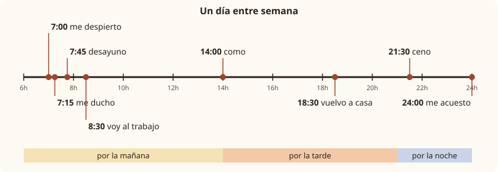

Lesson 11: Daily Routine and Reflexive Verbs¶
La rutina diaria y los verbos reflexivos
What time do you get up? Do you shower in the morning or at night? When do you go to bed? Talking about your day is one of the first real conversations you have in a new language, and in Spanish it needs one new piece of grammar: the reflexive verb. In English we say "I get up", "I get dressed", "I go to bed". In Spanish these are actions you do to yourself: me levanto, "I raise myself", me visto, "I dress myself", me acuesto, "I lay myself down". You already know one reflexive verb, llamarse, from Lesson 2. This lesson gives you the whole pattern, the verbs of a normal day, and the words that put a routine in order.
Learning outcomes
By the end of this lesson you will be able to:
- describe your daily routine from morning to night;
- conjugate reflexive verbs in the present, including the stem-changing ones (despertarse, acostarse, vestirse);
- put the reflexive pronoun in the right place, before the verb or attached to an infinitive;
- tell the difference between lavar and lavarse, acostar and acostarse;
- order events with primero, luego, después, por último, and say how often you do things.
masculinefeminineplural
11.1 Dialogue: early birds and night owls¶
Marta and Tomás share a flat in Madrid. It is Sunday evening, and they are planning who uses the bathroom first on Monday morning.
- Tomás: Marta, ¿a qué hora te levantas mañana? — Marta, what time are you getting up tomorrow?
- Marta: Entre semana me levanto siempre a las siete. — On weekdays I always get up at seven.
- Tomás: ¡Qué temprano! ¿Y qué haces primero? — How early! And what do you do first?
- Marta: Primero me ducho, luego me visto y después desayuno un café con tostadas. — First I shower, then I get dressed and after that I have coffee and toast for breakfast.
- Tomás: Yo me despierto a las siete, pero no me levanto hasta las siete y media. — I wake up at seven, but I don't get up until half past seven.
- Marta: ¿Y no llegas tarde al trabajo? — And aren't you late for work?
- Tomás: No, porque me ducho muy rápido y no desayuno en casa. Tomo un café en la oficina. — No, because I shower very quickly and I don't have breakfast at home. I have a coffee at the office.
- Marta: Entonces el baño es para mí de siete a siete y media. ¿Y por la noche? — So the bathroom is mine from seven to half past seven. And at night?
- Tomás: Por la noche ceno a las nueve y media y me acuesto a las doce. — At night I have dinner at half past nine and go to bed at twelve.
- Marta: ¿A las doce? Yo me acuesto a las once. Nunca me duermo tarde entre semana. — At twelve? I go to bed at eleven. I never fall asleep late on weekdays.
- Tomás: ¿Y los sábados? — And on Saturdays?
- Marta: Los sábados es diferente: me levanto a las diez y me relajo todo el día. — Saturdays are different: I get up at ten and relax all day.
Notice:
- Every verb about the body and the day comes with a small pronoun in front: me levanto, te levantas, me ducho, me acuesto. These are reflexive verbs.
- Some verbs change their stem: despertarse gives me despierto, acostarse gives me acuesto, vestirse gives me visto. You know the first two patterns from Lesson 10.
- desayunar ("to have breakfast") and cenar ("to have dinner") are ordinary verbs, not reflexive: desayuno, ceno.
11.2 Vocabulary: a day from morning to night¶
The verbs of the routine¶
| Spanish | Sounds like | English | Yo form |
|---|---|---|---|
| despertarse (e→ie) | [dehs-pehr-TAR-seh] | to wake up | me despierto |
| levantarse | [leh-bahn-TAR-seh] | to get up | me levanto |
| ducharse | [doo-CHAR-seh] | to have a shower | me ducho |
| bañarse | [bah-NYAR-seh] | to have a bath; to swim (in the sea) | me baño |
| lavarse | [lah-BAR-seh] | to wash (yourself) | me lavo |
| cepillarse los dientes | [seh-pee-YAR-seh lohs DYEHN-tehs] | to brush your teeth | me cepillo los dientes |
| afeitarse | [ah-fay-TAR-seh] | to shave | me afeito |
| peinarse | [pay-NAR-seh] | to comb your hair | me peino |
| maquillarse | [mah-kee-YAR-seh] | to put on make-up | me maquillo |
| vestirse (e→i) | [behs-TEER-seh] | to get dressed | me visto |
| ponerse (la ropa) | [poh-NEHR-seh] | to put on (clothes) | me pongo (irregular) |
| quitarse (la ropa) | [kee-TAR-seh] | to take off (clothes) | me quito |
| relajarse | [rreh-lah-HAR-seh] | to relax | me relajo |
| acostarse (o→ue) | [ah-kohs-TAR-seh] | to go to bed | me acuesto |
| dormirse (o→ue) | [dohr-MEER-seh] | to fall asleep | me duermo |
Table 11.1. Reflexive verbs of the daily routine. The infinitive ends in -se; the yo form starts with me.
Ordinary verbs of the day¶
| Spanish | English | Yo form |
|---|---|---|
| desayunar | to have breakfast | desayuno |
| comer | to eat; to have lunch | como |
| cenar | to have dinner | ceno |
| trabajar | to work | trabajo |
| estudiar | to study | estudio |
| salir de casa | to leave home | salgo de casa (irregular yo form) |
| volver a casa (o→ue) | to come back home | vuelvo a casa |
| dormir (o→ue) | to sleep | duermo |
Table 11.2. Non-reflexive verbs of the routine. Comer is "to eat" in general and also "to have lunch", the main meal of the day in Spain and Mexico.
Things you need¶
| Spanish | English |
|---|---|
| el despertador | the alarm clock |
| el baño | the bathroom |
| la ducha | the shower |
| el jabón | the soap |
| el champú | the shampoo |
| el cepillo de dientes | the toothbrush |
| la toalla | the towel |
| la cara | the face |
| las manos | the hands (la mano is feminine) |
| el pelo | the hair |
| los dientes | the teeth |
| la ropa | clothes (singular in Spanish) |
Table 11.3. Things and body parts. Note la mano, a feminine noun ending in -o, and la ropa, a singular word for "clothes".
Time phrases¶
| Spanish | English |
|---|---|
| por la mañana | in the morning |
| por la tarde | in the afternoon, in the early evening |
| por la noche | at night, in the evening |
| a las siete | at seven |
| a las siete de la mañana | at seven in the morning |
| a mediodía | at midday |
| temprano / tarde | early / late |
| entre semana | on weekdays |
| de lunes a viernes | from Monday to Friday |
| los fines de semana | at weekends |
Table 11.4. When things happen. With a clock time, use de la mañana; without one, use por la mañana.
Common mistake: por la mañana or de la mañana?
Say Me levanto temprano por la mañana ("in the morning") but Me levanto a las seis de la mañana ("at six in the morning"). De goes with a clock time; por goes on its own. In parts of Latin America you will also hear en la mañana, which is correct there.
11.3 Grammar: reflexive verbs and their pronouns¶
What "reflexive" means¶
A reflexive verb describes an action that the subject does to itself. Compare:
- Lavo el coche. — I wash the car. (the car gets washed)
- Me lavo. — I wash (myself). (I get washed)
The infinitive of a reflexive verb has -se attached: lavarse, levantarse. When you conjugate it, the -se becomes a pronoun that matches the subject, and moves in front of the verb. The verb itself is conjugated exactly like any regular verb of Lesson 6.
The reflexive pronouns¶
| Subject | Reflexive pronoun | English |
|---|---|---|
| yo | me | myself |
| tú | te | yourself |
| él, ella, usted | se | himself, herself, yourself |
| nosotros, nosotras | nos | ourselves |
| vosotros, vosotras | os | yourselves (Spain) |
| ellos, ellas, ustedes | se | themselves, yourselves |
Table 11.5. The reflexive pronouns. Se serves three persons: él, usted and ellos.
Two regular reflexive verbs¶
| Person | levantarse (to get up) | ducharse (to shower) |
|---|---|---|
| yo | me levanto | me ducho |
| tú | te levantas | te duchas |
| él, ella, usted | se levanta | se ducha |
| nosotros, nosotras | nos levantamos | nos duchamos |
| vosotros, vosotras | os levantáis | os ducháis |
| ellos, ellas, ustedes | se levantan | se duchan |
Table 11.6. Two regular -ar reflexive verbs. Practice hides the pronoun and the ending.
- ¿A qué hora te levantas? — What time do you get up?
- Mi hermano se ducha por la noche. — My brother showers at night.
- Nos levantamos a las ocho los domingos. — We get up at eight on Sundays.
- ¿Usted se afeita todos los días? — Do you shave every day?
Where the pronoun goes¶
The rule is simple, and it is the same for every pronoun you will learn in this book:
- Before a conjugated verb, as a separate word: Me levanto.
- In a negative sentence, after no and before the verb: No me levanto temprano. Never Me no levanto.
- With an infinitive (the -ar, -er, -ir form) the pronoun can be attached to the end of the infinitive, or placed before the conjugated verb in front of it. Both mean exactly the same:
| Pronoun attached | Pronoun in front | English |
|---|---|---|
| Voy a levantarme a las seis. | Me voy a levantar a las seis. | I'm going to get up at six. |
| Tengo que ducharme. | Me tengo que duchar. | I have to have a shower. |
| ¿Quieres acostarte? | ¿Te quieres acostar? | Do you want to go to bed? |
| No podemos dormirnos. | No nos podemos dormir. | We can't get to sleep. |
Table 11.7. Two positions with an infinitive. The pronoun must still match the subject: tengo que ducharme, not tengo que ducharse.
Common mistake: keeping -se
The -se of the dictionary form is only for the infinitive in the dictionary. In a sentence it changes with the person: Voy a ducharme (I), ¿Vas a ducharte? (you), Vamos a ducharnos (we). Saying Voy a ducharse is a very common beginner's error.
Reflexive or not?¶
Many verbs exist in both forms. Without the pronoun, you do the action to someone or something else; with it, you do it to yourself.
| Not reflexive | Reflexive |
|---|---|
| Lavo los platos. — I wash the dishes. | Me lavo las manos. — I wash my hands. |
| Despierto a mi hijo. — I wake my son. | Me despierto. — I wake up. |
| Acuesto a los niños. — I put the children to bed. | Me acuesto. — I go to bed. |
| Visto al bebé. — I dress the baby. | Me visto. — I get dressed. |
| Llamo a Ana. — I call Ana. | Me llamo Ana. — My name is Ana. |
Table 11.8. The same verb with and without the reflexive pronoun. The a before a person (a mi hijo, a los niños) is the "personal a".
My hands or the hands?
With parts of the body and clothes, Spanish uses the article, not the possessive, because the reflexive pronoun already shows whose hands they are: Me lavo las manos ("I wash my hands"), Me pongo la chaqueta ("I put on my jacket"), Se cepilla los dientes ("she brushes her teeth"). Me lavo mis manos is understood but sounds foreign.
11.4 Grammar: stem changes, and telling a routine in order¶
Reflexive verbs that change their stem¶
Reflexive verbs follow the same stem changes as other verbs. In Lesson 10 you met e→ie (querer → quiero) and o→ue (poder → puedo). Here is a third pattern, e→i, which only happens in -ir verbs such as vestirse. As always, the stem changes in every form except nosotros and vosotros, the "boot" shape.
| Person | despertarse (e→ie) | acostarse (o→ue) | vestirse (e→i) |
|---|---|---|---|
| yo | me despierto | me acuesto | me visto |
| tú | te despiertas | te acuestas | te vistes |
| él, ella, usted | se despierta | se acuesta | se viste |
| nosotros, nosotras | nos despertamos | nos acostamos | nos vestimos |
| vosotros, vosotras | os despertáis | os acostáis | os vestís |
| ellos, ellas, ustedes | se despiertan | se acuestan | se visten |
Table 11.9. Three stem-changing reflexive verbs. The nosotros and vosotros forms keep the original vowel.
Other verbs of the day that change their stem: dormirse (o→ue: me duermo), volver (o→ue: vuelvo), and sentarse (e→ie: me siento, "I sit down").
Common mistake: changing the nosotros form
The stem change never reaches nosotros and vosotros: nos acostamos, not nos acuestamos; nos despertamos, not nos despiertamos. If the stress does not fall on the stem, the stem does not change.
Dormir and dormirse¶
dormir means "to sleep"; dormirse means "to fall asleep". In the same way, ir is "to go" and irse is "to leave, to go away".
- Duermo ocho horas. — I sleep for eight hours.
- Me duermo en el sofá. — I fall asleep on the sofa.
- Me voy. ¡Hasta mañana! — I'm off. See you tomorrow!
Putting events in order¶
Sequence words make a list of actions into a story. They usually go at the start of the clause.
| Spanish | English |
|---|---|
| primero | first |
| luego | then |
| después | afterwards, after that |
| más tarde | later |
| antes de + infinitive | before (doing) |
| después de + infinitive | after (doing) |
| por último / finalmente | lastly, finally |
Table 11.10. Sequence words.
After antes de and después de, Spanish uses the infinitive, where English uses "-ing". The reflexive pronoun is attached and matches the subject:
- Desayuno después de ducharme. — I have breakfast after showering.
- Antes de acostarse, mi padre lee el periódico. — Before going to bed, my father reads the newspaper.
How often?¶
| Spanish | English |
|---|---|
| siempre | always |
| todos los días / cada día | every day |
| normalmente | normally, usually |
| a menudo | often |
| a veces | sometimes |
| casi nunca | hardly ever |
| nunca | never |
Table 11.11. Frequency words.
- Siempre me levanto a las siete. — I always get up at seven.
- A veces me ducho por la noche. — Sometimes I shower at night.
- Nunca me acuesto antes de las once. — I never go to bed before eleven.
- No me acuesto nunca antes de las once. — The same: if nunca comes after the verb, put no in front.
Double negatives are correct in Spanish
nunca can go before the verb on its own, or after the verb with no in front: Nunca desayuno = No desayuno nunca. Unlike in standard English, the "double negative" is normal and correct.

Worked example: describing a day
Turn these notes about Lucía into sentences: 7.00 wake up — shower — dress — 8.00 leave — 18.00 home — 22.30 bed.
- Wake up: Lucía se despierta a las siete. (despertarse, e→ie, third person)
- Shower and dress, in order: Primero se ducha y luego se viste. (vestirse, e→i)
- Leave: Sale de casa a las ocho.
- Come home: Vuelve a casa a las seis de la tarde. (de with a clock time)
- Bed: Por último, se acuesta a las diez y media. (acostarse, o→ue)
11.5 Practice¶
Me, te, se …¶
Fill each gap aloud with the right pronoun, then listen.
- Yo me levanto a las ocho. — I get up at eight.
- ¿Tú te duchas por la mañana? — Do you shower in the morning?
- Mi abuela se acuesta muy temprano. — My grandmother goes to bed very early.
- Nosotros nos vestimos rápido. — We get dressed quickly.
- ¿Vosotros os despertáis tarde? — Do you all wake up late?
- Los niños se cepillan los dientes. — The children brush their teeth.
A routine to complete¶
| Time | Activity | Spanish |
|---|---|---|
| 6.45 | I wake up | me despierto |
| 7.00 | I get up | me levanto |
| 7.10 | I have a shower | me ducho |
| 7.30 | I get dressed | me visto |
| 7.45 | I have breakfast | desayuno |
| 23.00 | I go to bed | me acuesto |
Table 11.12. Switch on Practice and write each yo form from memory.
Say it
Describe your own weekday in five or six sentences, with at least three sequence words and two frequency words. For example:
Normalmente me despierto a las siete. Primero me ducho y luego me visto. Después desayuno un café. A veces voy al trabajo en bicicleta. Por la noche ceno a las ocho y me acuesto a las once.
Then ask a partner: ¿A qué hora te levantas? ¿Te duchas por la mañana o por la noche? ¿A qué hora te acuestas?
11.6 Culture: the Spanish day and the Latin American day¶
Late meals in Spain. The Spanish timetable surprises most visitors. Breakfast is light, often just coffee and toast or a pastry. Many people have a small snack in the middle of the morning. Lunch, la comida, is the main meal and is usually eaten between two and three in the afternoon, and dinner, la cena, often not before nine or ten at night. In the afternoon, children and many adults have la merienda, a snack such as a sandwich or fruit. Restaurants follow the same hours, so a restaurant in Spain may be empty at seven in the evening and full at ten.
The split day. Many Spanish shops and offices traditionally work a jornada partida, a "split day": open in the morning, closed for two or three hours at lunchtime, open again until eight or nine. Others have a jornada continua, a continuous day that finishes in the mid-afternoon, which is common in summer. Large stores in cities stay open all day.
The siesta. The siesta, a short sleep after lunch, is famous, but in modern cities most people with a full-time job do not have time for one on weekdays. It is more a habit for weekends, holidays, hot summer afternoons, and for people who go home for lunch.
Latin America. Timetables vary from country to country, but in general meals are earlier than in Spain. In Mexico, la comida is also the big midday meal, eaten in the early or mid-afternoon, and la cena is lighter. In much of South America the midday meal is called el almuerzo. In Chile, an evening snack of tea, bread and something savoury is called la once, and in Argentina and Uruguay the afternoon merienda often comes with mate, a herbal drink shared from a gourd.
Words that change. In much of Latin America, especially Mexico, bañarse is the everyday word for having a shower, not only a bath: Me baño por la mañana usually means "I shower in the morning". In Spain, ducharse is the shower and bañarse the bath or a swim.
Getting up early. Spanish has a single verb for getting up early: madrugar. A well-known proverb says A quien madruga, Dios le ayuda, "God helps the one who gets up early", the Spanish cousin of "the early bird catches the worm". In Latin America you will often hear it as Al que madruga, Dios lo ayuda.
11.7 Summary¶
Summary
- A reflexive verb is an action you do to yourself. Its infinitive ends in -se: levantarse, ducharse, acostarse.
- The reflexive pronouns are me, te, se, nos, os, se. The verb itself is conjugated normally: me levanto, te levantas, se levanta, nos levantamos, os levantáis, se levantan.
- Position: before the conjugated verb (no me levanto), or attached to an infinitive (voy a levantarme = me voy a levantar). The pronoun always matches the subject.
- Stem changes work as usual, except in nosotros and vosotros: me despierto (e→ie), me acuesto (o→ue), me visto (e→i).
- With and without -se: lavo el coche / me lavo; acuesto a los niños / me acuesto. Use the article with body parts: me lavo las manos.
- Order and frequency: primero, luego, después, más tarde, por último; siempre, normalmente, a menudo, a veces, nunca. De la mañana with a clock time, por la mañana without.
11.8 Exercises¶
Exercise 1
Give the yo form of levantarse.
Answer
me levanto. me levanto
Exercise 2
Complete: Mis hijos ___ duchan por la noche.
Answer
se. Mis hijos se duchan por la noche. Ellos takes se.
Exercise 3
Give the tú form of acostarse.
Answer
te acuestas. te acuestas. The stem changes o→ue.
Exercise 4
Give the nosotros form of despertarse.
Answer
nos despertamos. nos despertamos. No stem change in the nosotros form.
Exercise 5
How do you say "she gets dressed"?
Answer
se viste. Se viste. Vestirse changes e→i.
Exercise 6
Rewrite with the pronoun attached to the infinitive: Me tengo que levantar temprano.
Answer
Tengo que levantarme temprano. Tengo que levantarme temprano.
Exercise 7
Reflexive or not? Choose lavo or me lavo: (a) ___ el pelo; (b) ___ la ropa; (c) ___ la cara; (d) ___ el coche.
Answer
(a) Me lavo el pelo. (b) Lavo la ropa. (c) Me lavo la cara. (d) Lavo el coche. Your own body: reflexive; something else: not reflexive.
Exercise 8
Correct the mistake: Voy a ducharse ahora.
Answer
Voy a ducharme ahora. Voy a ducharme ahora. The pronoun matches the subject, yo.
Exercise 9
Say "I never have breakfast" in two ways.
Answer
Nunca desayuno / No desayuno nunca. Nunca desayuno. No desayuno nunca.
Exercise 10
Write four sentences about Javier's Saturday, in order, using primero, luego, después and por último: he gets up at ten, has a bath, has breakfast in a café, and in the evening goes to bed late.
Answer
Primero, Javier se levanta a las diez. Luego se baña. Después desayuna en un café. Por último, por la noche, se acuesta tarde. Other orders of the sequence words are possible, as long as primero comes first and por último last.
11.9 Quiz¶
Quiz: daily routine and reflexive verbs
Exercise 11
Nosotros ___ a las siete.
- nos levantamos
- se levantan
- me levanto
- nos levantan
Answer
nos levantamos
Nosotros takes nos and the -amos ending.
Exercise 12
Which sentence means "I put the children to bed"?
- Me acuesto a los niños.
- Acuesto a los niños.
- Se acuestan los niños.
- Me acuesto.
Answer
Acuesto a los niños.
You do the action to someone else, so the verb is not reflexive.
Exercise 13
Mi madre se ___ a las seis. (despertarse)
Hint: e→ie in the third person
Answer
despierta
despertarse changes e→ie in every form except nosotros and vosotros.
Exercise 14
¿A qué hora ___ acuestas?
Answer
te
The tú form takes the pronoun te.
Exercise 15
Say "I get dressed" in Spanish.
Answer
me visto / yo me visto
Exercise 16
Match the Spanish to the English.
| A | B |
|---|---|
| a menudo | never |
| a veces | finally |
| nunca | often |
| por último | sometimes |
Answer
a menudo — often; a veces — sometimes; nunca — never; por último — finally
Exercise 17
Put the words in order: "I'm going to get up early."
Words: a / temprano. / levantarme / Voy
Answer
Voy a levantarme temprano.
Exercise 18
Tap the wrong word.
Nosotros nos acuestamos a las once.
Answer
Wrong word: acuestamos.
Corrected: Nosotros nos acostamos a las once.
The stem does not change in the nosotros form.
Exercise 19
Write what you hear.
Dictation. Have someone read the sentence aloud, then write it down.
Primero me ducho y luego desayuno.
Answer
Primero me ducho y luego desayuno.
Exercise 20
Say it aloud.
Normalmente me levanto a las siete de la mañana.
Answer
Say: Normalmente me levanto a las siete de la mañana.